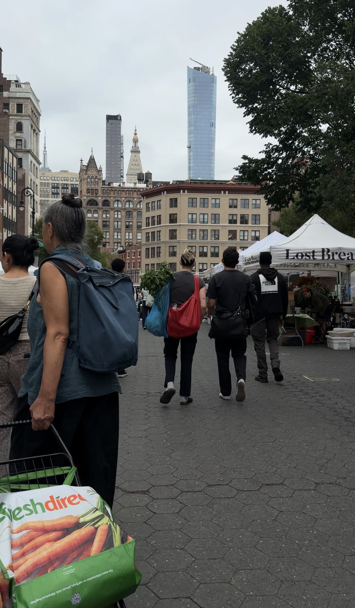

This website tells the story of a field trip to the park. Union Square to be exact, on the way back home from class on a Thursday afternoon.
As I walked through Union Square, I noticed how busy the park was. There were people walking through, sitting on benches, talking with friends, and passing through on their way somewhere else.

The environment feltbusy but social. Even though everyone seemed to be doing something different, the park brought all of these people together in the same space.
One thing that stood out to me was how many different activities were happening within the same area. Some people were relaxing while others were simply passing through.